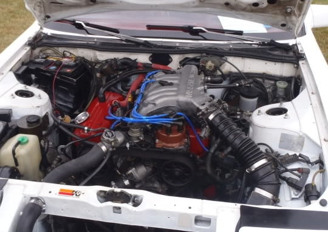

-
Okay so third time trying to post this is the charm right?
Anyway, in brief, I've been playing around with a Quest intake plenum. I'm trying to have it set up as a front facing intake plenum. Why? For fun, to see if i can do it, but mostly because I believe it'll make it easy for routing intake plumbing, and, considering it's a composite manifold (Nylon 6, correct me if i'm wrong) it is much lighter than any other stock plenum.
the pictures are of the top manifold and how it would sit on the lower manifold.
the main issue is the clearance for the distributor. It stands close to half an inch too tall. does anyone have any suggestions?
obviously the hood clearance is bad (just like the pathy upgrade), but i'll figure something out that doesn't involve cutting the hood, or adding a bunch of washer spacers.
Please leave you're feedback. Cheers.
Attached files<style>.ig-b- { display: inline-block; }
.ig-b- img { visibility: hidden; }
.ig-b-:hover { background-position: 0 -60px; } .ig-b-:active { background-position: 0 -120px; }
.ig-b-v-24 { width: 137px; height: 24px; background: url(http://badges.instagram.com/static/images/ig-badge-view-sprite-24.png) no-repeat 0 0; }
@media only screen and (-webkit-min-device-pixel-ratio: 2), only screen and (min--moz-device-pixel-ratio: 2), only screen and (-o-min-device-pixel-ratio: 2 / 1), only screen and (min-device-pixel-ratio: 2), only screen and (min-resolution: 192dpi), only screen and (min-resolution: 2dppx) {
.ig-b-v-24 { background-image: url(http://badges.instagram.com/static/images/ig-badge-view-sprite-24@2x.png); background-size: 160px 178px; } }</style>
<a href="http://instagram.com/loganayotte?ref=badge" class="ig-b- ig-b-v-24"><img src="//badges.instagram.com/static/images/ig-badge-view-24.png" alt="Instagram" /></a> -
Interesting. I'm not so sure about the angle at which the throttle will be at. Looks like it may make an awkward fit. I have the Pathy plenum, and it is mounted forward facing. I like that idea because I routed the intake directly behind the driver side fog light. (I removed fog light and put mesh screen there). I shimmed up the hood with washers, and I am tired of it. I am considering going back to stock just to close the hood. There is not much to do for the distributor clearance (that I know of). I used the Pathy distributor. I have been considering a later style pathfinder/xterra plenum that is slightly different, and if mounted backwards, it may fit under the hood without shimming. I have yet to try this.
Here is mine:

-
You mean the "pathy downgrade". Makes the car look like poo by propping the hood up for clearance and kills any top-end power it once had.- VG30DET (HE341) 86 300ZX - 1982 280ZX Turbo - Headered NA 1986 300ZX 2+2 - 2000 Xterra - -
So far I've grinned away at the plenum in order to clear the dizzy cap, but its borderline.
the main issue right now is hood clearance, in which there is NONE. the option for front mounting this plenum is moot. it can't be front mounted, and it is utterly useless mounted in a stock position.<style>.ig-b- { display: inline-block; }
.ig-b- img { visibility: hidden; }
.ig-b-:hover { background-position: 0 -60px; } .ig-b-:active { background-position: 0 -120px; }
.ig-b-v-24 { width: 137px; height: 24px; background: url(http://badges.instagram.com/static/images/ig-badge-view-sprite-24.png) no-repeat 0 0; }
@media only screen and (-webkit-min-device-pixel-ratio: 2), only screen and (min--moz-device-pixel-ratio: 2), only screen and (-o-min-device-pixel-ratio: 2 / 1), only screen and (min-device-pixel-ratio: 2), only screen and (min-resolution: 192dpi), only screen and (min-resolution: 2dppx) {
.ig-b-v-24 { background-image: url(http://badges.instagram.com/static/images/ig-badge-view-sprite-24@2x.png); background-size: 160px 178px; } }</style>
<a href="http://instagram.com/loganayotte?ref=badge" class="ig-b- ig-b-v-24"><img src="//badges.instagram.com/static/images/ig-badge-view-24.png" alt="Instagram" /></a> -
Shave the flange at an angle to lower the log part closer to the valvecover -
I would but then we're back to having clearance issues with the distributor cap.G-E;n765281 wrote: Shave the flange at an angle to lower the log part closer to the valvecover<style>.ig-b- { display: inline-block; }
.ig-b- img { visibility: hidden; }
.ig-b-:hover { background-position: 0 -60px; } .ig-b-:active { background-position: 0 -120px; }
.ig-b-v-24 { width: 137px; height: 24px; background: url(http://badges.instagram.com/static/images/ig-badge-view-sprite-24.png) no-repeat 0 0; }
@media only screen and (-webkit-min-device-pixel-ratio: 2), only screen and (min--moz-device-pixel-ratio: 2), only screen and (-o-min-device-pixel-ratio: 2 / 1), only screen and (min-device-pixel-ratio: 2), only screen and (min-resolution: 192dpi), only screen and (min-resolution: 2dppx) {
.ig-b-v-24 { background-image: url(http://badges.instagram.com/static/images/ig-badge-view-sprite-24@2x.png); background-size: 160px 178px; } }</style>
<a href="http://instagram.com/loganayotte?ref=badge" class="ig-b- ig-b-v-24"><img src="//badges.instagram.com/static/images/ig-badge-view-24.png" alt="Instagram" /></a>

Copyright © 2006–. All rights reserved. Privacy Policy